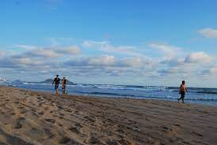
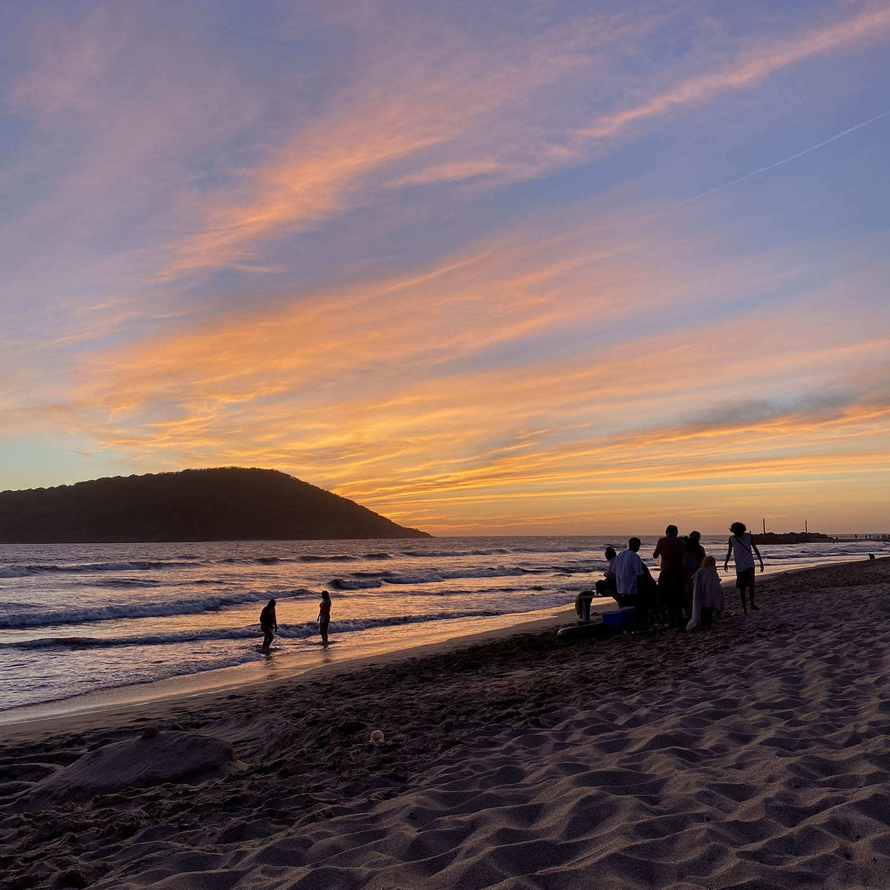
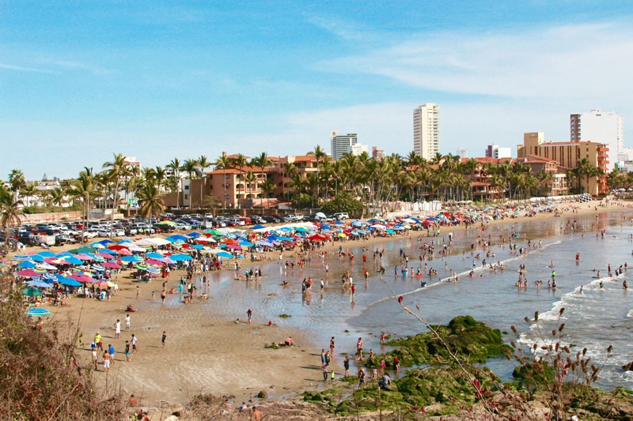

Playa Las Brujas
Se considera de las mejores playas en Mazatlán gracias a que sus enormes olas la hacen la más visitada por los amantes del surf.
Playa Camaron
Pertenece a la Zona Dorada en la que se ubican muchísimos hoteles con una vista espectacular. Sus aguas son bastante tranquilas por lo que se puede nadar sin problema.
Playa Sabalo
De igual manera se encuentra en la Zona Dorada y es de las principales de Mazatlán. Su principal característica es que sus aguas son de oleaje moderado, por lo que aquí se puede andar en jet ski o tomar excursiones de pesca que se llevan a cabo en mar adentro, además es perfecta para descansar en familia.
